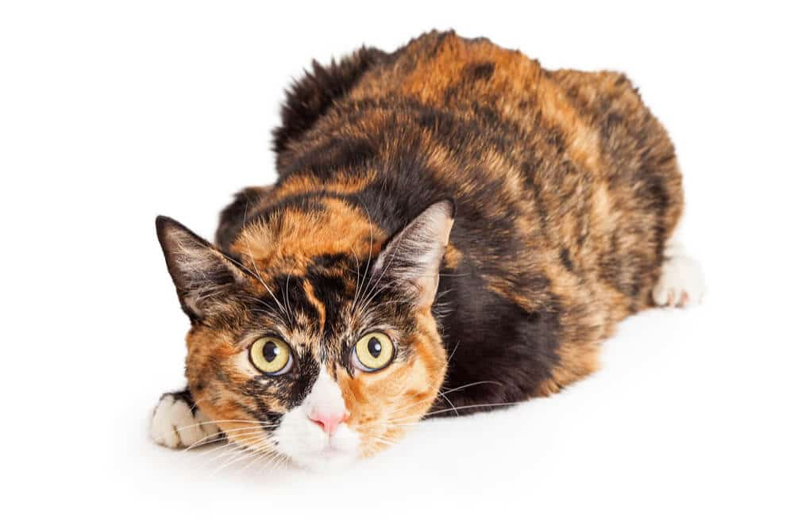

All About Calico Cats

Whether you’re thinking about getting a cat yourself or not, you’ve probably come across the wonderful calico at some point. Who hasn’t?
What Makes Calico Cats So Special?
Calico cats have an air of mystery about them along with a rich history, not to mention their unique appearance…
They aren’t even a breed of cat! Calicos get their name from the coloration of their coat!
In this post, we’ll tell you everything you need to know about calico cats, along with 10 fun facts about them. Let’s dive in!
Calico Cat Appearance
Calicoes are often described as the world’s most colorful cats. After all, they are one of the only cats to exhibit such a wide range of color variations in its coat.
The calico is not a breed of cat but a domestic cat with a variety of genetic color variations. The most common calico is a tri-color pattern of orange, black, and white. It is possible, however, to have a calico pattern with shades of cream, red, blue-black, and even chocolate brown.
Calicoes with less intense coloration are known as dilute calico cats. They are primarily white in color with patches of light color ranging from blue-gray to cream to strawberry blonde.
You can find calico cats across many distinct breeds with the exception of solid-color and pointed breeds like the Bombay, Russian Blue, British Shorthair, Siamese, and Himalayan. Because calico cats occur across so many different cat breeds, it’s sometimes hard to tell whether the cat is a calico or actually a tortoiseshell.
The best way to tell is to examine the calico patches.
A tortoiseshell cat usually has the primary colors (red and black) woven throughout the coat while a calico will have distinctive solid-colored patches (like black patches or white patches). Some of the breeds you can find in calico appearance include Maine Coon, Manx, Persian, American Shorthair, Japanese Bobtail, Siberian, and more.
Personality and Behavior
Calico cats aren’t a breed unto themselves, so we can’t assign breed-specific personality or behavioral traits to them. Like many cats, calicoes will develop their unique personalities according to many factors, such as socialization and life experiences.
Calico cats aren’t a breed unto themselves, so we can’t assign breed-specific personality or behavioral traits to them. Like many cats, calicoes will develop their unique personalities according to many factors, such as socialization and life experiences.


You could also get the opposite: an aloof, high-maintenance cat with an attitude. That being said, many calico owners report that their cats share a similar personality with tortoiseshell cats – they called it “tortitude.”
Torties are known for being spunky, sassy, and independent by nature. Calico cats may share these characteristics but, like we mentioned, you never quite know what you’re going to get. Plus, calico cats can’t be bred, so they’re even less likely to share common characteristics
Mysterious Genetics
The genetics of calico cats are quite fascinating and have long been the topic of scientific research. We could really get into the weeds about these genetics, but your eyes might glaze over. So, we’ll keep this as short and simple as possible.
The black and orange patches of fur that characterize these cats are a result of the genetic phenomenon called “X-chromosome inactivation”.
You could have a orange tabby with calico patches of white fur or black fur just as easily as a black cat with calico patches of white and orange fur.
Are Calico Cats Always Female?

In cats, the gene that dictates fur color is located on the X chromosome. Nearly all calico cats are female, so they have two X chromosomes. The rare male calico cats have one X and one Y chromosome.
In addition to determining a cat’s coat color, X chromosomes have numerous genes that code for proteins that are necessary for survival.
With females having two X chromosomes, this double dose of ‘survival’ genes could be toxic. To compensate for this double dose, one of the X chromosomes is randomly inactivated when the calico kitten is just a tiny ball of cells in the mother’s womb.
Thus, if the X chromosome carrying the gene for white fur in one particular spot of the body is inactivated, the orange gene might become active in that spot instead (and vice versa). Because the deactivated chromosomes are chosen randomly, the combination of fur colors in calico cats is also random and unique for every calico cat.